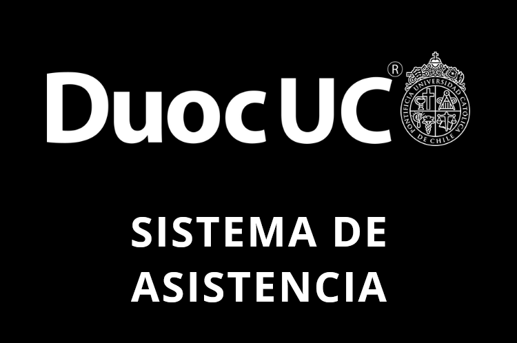

<ion-content [fullscreen]="true">
  <div class="centrar">
    <div class="enmarcar-login">
      <ion-card class="ion-text-center">
        
        
      
        <ion-card-content>

          <ion-card-header>
            <ion-toolbar>
              <h2>Inicio de sesión</h2>
            </ion-toolbar>
          </ion-card-header>

          <ion-item>
            <ion-input [(ngModel)]="usuario.cuenta" 
                label="Cuenta" labelPlacement="floating"
                placeholder="Ej: mvargas"></ion-input>
          </ion-item>

          <ion-item>
            <ion-input [(ngModel)]="usuario.password" 
                label="Contraseña" labelPlacement="floating" type="password"
                placeholder="Ej: 1234"></ion-input>
          </ion-item>

          <div class="ion-margin-top">
            <ion-button 
              shape="round" 
              size="small" 
              (click)="ingresar()" 
              class="ancho-boton" 
              (mouseenter)="vibrarBoton($event)">
              Ingresar
            </ion-button>
          </div>
          

          <div class="ion-margin-top">
            <button (click)="recuperarContrasena()">Recuperar contraseña</button>


          </div>
          
          
            
        </ion-card-content>

      </ion-card>

    </div>
  </div>
</ion-content>